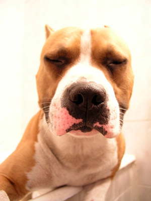

Forums galactiques > Taverne galactique : lieu de discussion informel > Blagues
Pages : 1
ERLORAK 14/01 ETU 21:34  | Stressé par la vie politique de la galaxie? Envie de vous détendre et de rire? Voici les blagues! Le mari: - Ca fait 5 ans qu'on est mariés, et on n'est jamais parvenus à être d'accord sur quelque chose La femme : - Tu as tort ; ça fait 6 ans qu'on est mariés. La veille de son mariage, la future épouse discute avec sa maman : - Maman, je voudrais que tu m'enseignes comment on rend un homme heureux ! La mère pousse un énorme soupir, puis commence : - Eh bien ma chérie, quand deux personnes s'aiment, se désirent et se respectent l'une l'autre, l'amour est toujours une très belle chose? - Je t'arrête tout de suite maman, je sais très bien me débrouiller au lit ; je voulais juste que tu m'apprennes à bien cuisiner les lasagnes. La pire voiture du monde, c'est l'homme ! En voici les raisons : Il démarre à la main. Il n'a que deux petits réservoirs. Il n'existe que deux modèles; décapotables ou non. Il se graisse trop vite. En tout temps il faut le pomper. Bien gonflé il fait neuf secondes. Son levier de vitesse est quelquefois dur. Il n'a que des vitesses manuelles. Il ne fait que de petites distances avec de grands intervalles. Il perd son huile quand il est trop chaud. Il n'a pas ou peu de contrôle sur les départs. - Durant toute mon enfance, raconte un Américain, j'ai vu des centaines de westerns. Ce qui me plaisait, surtout, c'était les scènes de bagarres dans un saloon, quand le héros triomphe d'une demi-douzaine de cow-boys, bourrés de whisky, après avoir réduit en petit bois tout le mobilier de l'établissement. Et, plus tard, c'est ce qui m'a donné l'idée de devenir... - Shérif ? - Non. Fabricant de meubles, vraiment incassables, ceux-là. Un soir au dîner, la petite dernière demande à son père : - Papa, pourquoi t'es toujours tout rouge ? - Ben tu vois ma fille, c'est l'été, et en mobylette, tu prends des coups de soleil et ça te donne la peau toute rouge. La fillette opine du chef mais ne paraît pas totalement convaincue. - Mais papa, en hiver aussi t'es tout rouge... - Oui ma fille mais en hiver il fait froid. Sur la mobylette, le froid et la vitesse ça te fait la peau toute rouge. Alors la mère, excédée, saisit la bouteille de PASTIS et la tend à sa fille. -Tiens, passe la mobylette à ton père ! Fidèle à ses habitudes, une petite vieille assiste à la messe du matin, quand tout à coup le curé dit : - Que tous ceux qui ont commis le péché d'adultère cette semaine s'avancent. La petite vieille, un tantinet dure d'oreille, demande à son voisin : - Qu'est-ce que vient de dire monsieur le curé ? Ce dernier répond : - Il a dit que tous ceux qui désirent une pastille à la menthe s'avancent. La petite vieille, chancelante et s'appuyant sur sa canne, se lève alors avec peine. Le curé lui lance, offusqué : - Vous ? Madame ? A votre âge, vous n'avez pas honte ? - C'est pas parce que je n'ai plus mes dents que je ne suis pas capable d'en sucer une de temps en temps vous savez. Le gars va chez le docteur et lui dit: - Lorsque je me touche ici, ça me fait mal (en se touchant une épaule) - Lorsque je me touche ici, ça me fait mal (en se touchant un coude) - Lorsque je me touche ici, ça me fait mal (en se touchant une hanche) - Lorsque je me touche ici, ça me fait mal (en se touchant un genou) - Lorsque je me touche ici, ça me fait mal (en se touchant une cheville) Le docteur lui touche le bras et demande: - Et ici ? Le patient répond que non. Et là le docteur répond : - Allons à la radioscopie, vous avez sans doute une fracture à l'index. C'est un mec qui passe dans la rue des putes, il en accoste une : le mec : "C'est combien la turlutte?" la pute : "C'est 30 euros" le mec : "oh mince, j'en ai que 10....bon je te donne 10 euros et je te file mon portable, ça te va?" la pute réfléchit et dit : "Bon c'est ok" Le mec fait sa petite affaire et puis lui file les 10 euros...... La pute s'exclame : "Et ton portable?" Le mec : "Ah oui....06.45.86.22.14 Retirez tous vos vêtements en vous asseyant sur le bord du lit. Mettez vos vêtements en tas. Allez jusqu'à la salle de bain, tout nu. Si vous croisez votre femme ou votre petite-amie en chemin, n'oubliez pas d'agiter votre bassin de façon suggestive devant elle pour lui montrer que vous êtes fier de votre engin. Regardez votre superbe physique masculin dans le miroir et rentrez votre ventre pour voir si vous avez des abdos (réponse non). Admirez la taille de votre pénis, grattez-vous les testicules et prenez une dernière bouffée d'odeurs mêmes en vous humant les doigts.Passez sous la douche. Ne cherchez pas de gants de toilettes (vous n'en utilisez pas). Lavez-vous le visage. Lavez-vous les aisselles. Pétez bruyamment et étonnez-vous des capacités de résonance formidables de la cabine de douche.Lavez-vous les parties et la zone alentours. Lavez-vous le derrière, en laissant bien entendu des poils de cul collés au savon. Prenez un shampoing (n'importe lequel) et lavez-vous les cheveux.Ouvrez le rideau de douche et regardez-vous dans le miroir avec toute cette mousse sur les cheveux. Refermer ensuite le rideau. N'oubliez pas de faire votre pipi. Rincez-vous. Sortez de la douche. Ne remarquez pas toute l'eau qui s'est répandue sur le sol parce que vous aviez mal placé le rideau de douche. Séchez-vous partiellement. Bien sûr vous aurez laissé le rideau de douche s'égoutter sur le sol et non pas dans la douche. Regardez-vous dans le miroir. Bandez vos muscles, rentrez votre ventre, admirez la taille monstrueuse de votre pénis, etc ?.. Ne rincez pas le bac de douche. Laissez le chauffage de la salle de bain et la lumière allumés Retournez près de votre pile de vêtements dans la chambre, juste vêtu d'une serviette autour de la taille. Si vous croisez votre femme ou votre petite-amie, ouvrez votre serviette et exhibez votre copain le pénis avec un beau déhanchement du bassin couplé à un petit cri du genre "Waow t'as vu la bête !" Jetez la serviette humide sur le lit. Habillez-vous avec vos vêtements " Sales " en deux minutes. Quand tu mets longtemps pour accomplir une tache tu es lent. Quand ton patron met longtemps il est méticuleux. Quand tu ne fais pas ton boulot tu es paresseux. Quand ton patron ne fait pas le sien il est trop occupé. Quand tu commets une erreur tu es un idiot. Quand ton patron commet une erreur il est seulement humain. Quand tu fais quelque chose sans qu'on te l'ait demandé tu outrepasses ton autorité. Quand ton patron le fait il fait preuve d'initiative. Quand tu maintiens ta position tu es entêté. Quand ton patron le fait il est ferme. Quand tu ne respectes pas le protocole tu es grossier. Quand ton patron le fait il est original. Quand tu contentes ton patron tu es lèche-cul. Quand ton patron contente son patron il est coopératif. Quand tu n'es pas dans ton bureau tu glandes. Quand ton patron n'est pas dans son bureau il est en affaires. Quand tu es en congé maladie tu es toujours malade. Quand ton patron est en congé maladie il doit être gravement malade. Quand tu demandes un congé tu dois avoir un entretien ailleurs. Quand ton patron le fait c'est parce qu'il a trop travaillé. Quand tu envoies des blagues c'est du courrier inutile. Quand ton patron le fait c'est de l'humour. J'ai un copain qui cherche du boulot. il avait trouvé une place a lourde mais 8 jours apres il etait lourdé, il avait trouvé une place a limoges, 8 jours apres il etait limogé , il a trouvé une place a castres, il y est pas allé... C?est un type qui croise un de ses copains dans la rue. ? Tiens, Albert, ça va? ? Ben, figure-toi que ma belle-mère est morte, la semaine dernière... ? Oh shit! Qu?est-ce qu?elle avait? ? Bof, presque rien: une table, un buffet... Pourquoi il n?y a pas beaucoup de femmes au ciel? Parce que ça serait l?enfer! À la fin de la représentation au Lido, un homme demande à passer en coulisses pour aller féliciter le magicien. "Votre numéro est époustouflant!" dit-il à l'homme de spectacle. "Comment faites-vous cela?" "Ah, cher monsieur" commence le prestidigitateur, "je pourrai vous le dire mais je serai obligé de vous tuer ensuite!" L'admirateur plongé dans ses réflexions marque une pause puis il répond: "Bah ce n'est rien. Dans ce cas là, vous n'aurez qu'à révéler votre truc à ma femme!" Peux pas manger de boeuf: vache folle... Peux pas manger de poulet: grippe aviaire... Peux pas manger d'oeufs: salmonellose... Peux pas manger de porc... peur que la grippe aviaire les affecte... Peux pas manger de poisson... les métaux lourds dans l'eau ont empoisonné leur chair... Peux pas manger de fruits et de légumes : insecticides & herbicides Hmmmmmmmmm!!!!!!!!!!!!! M M M M Je crois bien que ça nous laisse le chocolat !!!! Ne vous êtes-vous jamais demandé ce qui poussait les chiens à se renifler le derrière à chaque fois qu'ils rencontrent un de leurs congénères? Je vais vous donner l'explication: Il y a très très longtemps, bien avant que les humains n'apparaissent, c'étaient les chiens qui régnaient en maîtres sur la planète. Ils étaient comme le sont les humains actuellement: ils marchaient sur leurs pattes de derrière, ils parlaient entre eux, bref, ils avaient ce que l'on peut appeler une vraie société... La seule différence est qu'ils vivaient avec un Dieu vivant, le dieu "NONOSS". Un jour, en pleine célébration du dieu NONOSS, un des chiens de l'assemblée laissa échapper une flatulence d'une odeur pestilentielle et cette odeur infecte se propagea jusqu'aux narines du dieu NONOSS. Le dieu fut extrêmement fâché, et demanda au chien coupable de se dénoncer pour qu'il subisse sa punition. Or, aucun chien n'avança. Le Dieu NONOSS, après de multiples menaces, décida de transformer tous les chiens en ce qu'ils sont aujourd'hui. Et depuis ce jour là, les chiens cherchent le coupable... Le secret de Tarzan et la machine à laver A cause de « l'innocence » de Tarzan qui a vécu seul pendant longtemps, Jane dut lui donner des cours pour lui expliquer la sexualité et un jour, lui expliquant les choses comme à un petit enfant pour qu'il comprenne : - Regarde, tarzan, ce que tu as là entre tes jambes, c'est comme ton linge et ça, que j'ai là entre mes jambes c'est comme une machine à laver ..... Et donc ce que tu dois faire, c'est comme mettre ton linge dans ma machine à laver ... Les 5 nuits suivantes, Tarzan lava son linge sans s'arrêter, et lorsque Jane enfin put respirer, elle lui dit : - Ecoute, Tarzan, il ne peut y avoir autant de lessives à la suite, ça n'est pas bon pour le linge ni la machine; tu devras attendre 2 ou 3 jours pour recommencer à laver ton linge ! En entendant cela, Tarzan fut très déçu, et après un mois sans «lessive», Jane lui dit : - Tarzan, qu'est-ce qu'il t'arrive ? Pourquoi depuis un mois ne mets-tu pas ton linge dans ma machine ? Alors Tarzan lui répondit - Tarzan avoir appris à laver à la main !!!! Quel est le point commun entre l'homme et "Windows"? -Chaque fois que ça sort on croirait que tout est inclus dedans, mais en fin de compte il y a toujours une version qui le remplace. Qu'est-ce qui fait que tous les hommes sont beaux? -L'obscurité. Comment rendre un homme fou au lit? -En cachant la télécommande. Un retraité rentre chez lui avec son sac de golf, un peu dépité. - Ça n'a pas été ? Lui demande sa femme. - Ben je n'ai pas de mal à frapper la balle, mais le problème c'est que je n'arrive pas à voir où elle tombe, même avec mes lunettes... - T'as qu'à emmener mon frère Marcel ! - Mais il a 84 ans, Marcel. Et il ne sait pas jouer au golf. - Oui mais il voit très bien. Tu joues, et lui te dit où la balle est tombée ! Le jour suivant, notre golfeur emmène son beauf de 84 ans au golf et il tire son premier swing. - T'as vu où elle est partie ? Marcel. - Ouais ! - Alors ? Elle est où ? - J'ai oublié. Tous les matins un agent est de service très tôt au commissariat pour allumer le feu et balayer devant avant l'ouverture. Et tous les matins, sur le trottoir, juste devant la porte, il trouve une grosse merde de chien. Il finit par guetter et se rend compte qu'il s'agit du chien qu'un gamin vient faire régulièrement chier à cet endroit. Un jour, notre agent se poste "en embuscade" et dès qu'il voit la gamin approcher et le chien commencer sa besogne, il surgit dehors et crie au gamin qui détalle de suite avec sa bête : - Je vais me le faire, ton chien !!! À distance le gosse s'arrête, se retourne et lance : - Chic, depuis le temps que Maman veut des petits chiens policiers. Bill Gates est en train de se promener avec son petit garçon dans les allées de son immense propriété et il tente de lui inculquer les grands principes qui mènent le monde : - Mon fils, tu seras bientôt adulte et il faut que tu saches une chose essentielle: l'argent ne fait pas le bonheur; celui qui ne possède qu'un milliard de dollars peut très bien être aussi heureux que l'homme qui en possède dix ! Comment peut on donner davantage de liberté à une femme? - En agrandissant sa cuisine. Un mari se plaint que sa femme n'affectionne pas sa famille. Surprise elle répond : - C'est faux ! La preuve, je préfère ta belle-mère à la mienne ! Un couple de randonneurs à la campagne. La femme : - Chéri...Ce paysage me laisse sans voix ! - Parfait, nous campons ici ! - Alors, tu as fini par divorcer ? - Oui ! Elle était trop gamine? A chaque fois que je prenais un bain, elle arrivait par derrière et elle me coulait tous mes bateaux ! - Quand les Chinois se sont-ils intéressés au tour de France ? - Le jour où ils ont cru entendre parler de Mao jaune. Une femme est avec son amant quand elle entend une clé tourner dans la serrure. - Mon mari! Prends vite tes vêtements et saute par la fenêtre ! - Mais je suis tout nu et il pleut à verse. - Ne discute pas! S'il te trouve tu es mort! L'autre attrape ses affaires et saute par la fenêtre. Arrive à ce moment là un groupe de joggers et pour passer inaperçu, il se mêle à eux. Un jogger, surpris, lui demande : Vous courez toujours tout nu? - Oui, j'adore sentir le vent sur ma peau, ça me donne une sensation de liberté. - Vous courez toujours avec vos affaires sous le bras? demande le deuxième. - Oui, comme ça à la fin du jogging, je me rhabille et je vais directement travailler. - Et vous courez toujours avec un préservatif? Redemande le premier jogger. - Ah non, seulement quand il pleut. C'est un Alsacien qui monte dans un train. Dans le compartiment se trouvent déjà deux hommes costumés et cravatés qui tapent sur leur ordinateur. Notre brave alsacien s'installe près de ces deux hommes et commence à manger un sandwich saucisse choucroute. Au bout de quelques minutes,il demande à l'un des deux hommes en costume, avec un fort accent alsacien : - "Puiche-je savoir où vous z'allez ?" - "Et bien moi, je vais à PARISS", répond, d'un air moqueur, l'homme cravaté. L'alsacien a mal compris et répond : - "PARISSSS ?" Et le cravaté rétorque : - "OUI, PARISS avec deux S !!!" L'Alsacien se demande pourquoi Paris avec deux "s" mais n'en rajoute pas et continue à déguster son sandwich saucisse-choucroute. Un peu plus tard, il s'adresse à l'autre homme cravaté et lui demande: - "Et vous, où allez-vous ?" - "Et bien moi, répond le deuxième homme cravaté, également d'un air moqueur, je vais à Bordeauxx avec deux X !!!" L'alsacien ne répond pas et s'interroge sur ces deux hommes qui se moquent de lui. Tout à coup l'un des deux hommes cravatés se tournent vers notre Alsacien et lui demande : - "Et toi, où vas-tu ?" - "Et bien moi, j'vais à Mâcon, avec deux cons !" Dans un petit village, le bourgmestre (= le maire) et le pretre se rendent à la chasse ensemble. au bout d'1/4 d'H, un superbe chevreuil apparait a 200 metre, ne bougeant pas. Le maire epaule, tire et rate son coup, il lance alors un chapelet de jurons "Nom de dieu de nom de dieu de merde......" Le pretre le reprimande enlui disant de faire attention, que Dieu le regarde et qu'il pourrait ne pas aprrécier. 1/4 d'H plus tard, un mastard de sanglier apparait a 100 metres, le maire épaule, tire et rate. Le sanglier s'enfuit et le maire lache un nouveau chapelet d'injure " Nom de Dieu de bordel de merde de Dieu de con" Le pretre, réellement offusqué, le met une nouvelle fois en garde contre la colère de Dieu et lui rappele son éducation catho, etc.. 1/4H plus tard, un cerf de superbe taille apparait a moins de 50 metres, le maire epaule, tire et rate . Encore une fois , il insulte tous le saints du paradis et Dieu et son fils et la Saint-Vierge. Le pretrele réprimande sérieusement en lui faisant une nouvelle fois craindre la colère de Dieu. Sur ce, un énorme éclair déchire le ciel et foudroie le pretre. Et on entend une voix caverneuse venant du ciel :"Nom de Dieu de nom de Dieu de merde, j'ai raté ma cible". Marie-Lise demande à Patrick, son mari : - Chéri, tu préfères une femme jolie ou une femme intelligente ? - Ni l'une, ni l'autre, mon amour, c'est toi que je préfère... Quelle est la différence entre aimer, aimer beaucoup et haïr ? ? ?? ??? Recracher, avaler et mordre... Un homme pressé entre dans un hòtel, et se dirige vers la réception à toute vitesse. Il se cogne accidentellement à une femme près de lui et ce faisant son coude heurte le sein de la dame. Et les voilà tous deux très embarrassés. Alors l'homme se tourne vers elle et lui dit : - Madame, si votre coeur est aussi tendre que votre sein, je sais que vous me pardonnerez... Et la dame répond du tac au tac : - Monsieur, si votre pénis est aussi dur que votre coude, je suis dans la chambre 312... C'est dans une boucherie que ca se passe. Une sage-femme commande 200 grammes d'américain préparé, le boucher prend sa spatule, prend une maclotte d'américain et le pèse sans regarder : 200 grammes. La sage-femme demande 150 gr de tete de porc pressée, le boucher prend son couteau, coupe le truc, pèse sans regarder et paf, 150 gr pile-poil. La sage-femme est impressionné et veut le pieger, elle demande 264 de rillettes du Mans (préparé en 24H), et de nouveau, le boucher tape une grosse rawette de rillette sur sa balance, paf 264 gr. La sage-femme :"waouh, comment faites vous pour deviner?" le boucher : "trente ans de metier, ma p'tite dame" Sur ce, une cliente enceinte commence ses contractions et perd les eaux au milieu du magasin. LA sage-femme ne s'emeut guere et officie. Elle sort un beau bébé, et fait "c'est un garcon, 3,9 KG." Le boucher qui a assisté la sage-femme dit "excusez moi mais il me semble qu'il fait 3,7 KG. La sage-femme :" moi aussi trente de metier". Le boucher appele alors son commis et lui demande d'aller le peser dans l'arriere boutique pour pas saloper son étal. Quelques minutes après, le commis revient en disant :" 1,2KG" La sage femme et le boucher se ragardent et protestent en disant qu'ils n'ont pas pu se tromper d'autant. Le commis répond : " si, si, 1,2 KG, désossé, vidé, 1,2 KG" C'est un gars au lit qui écoute la radio avec sa femme (une belle blonde) et un matin et ils entendent : - Nous annonçons 10 cm de neige aujourd'hui alors veuillez mettre vos voitures du côté pair de la rue pour le déneigement! La femme se dépêche et va placer l'auto du côté pair. Le lendemain, ils écoutent encore la radio qui dit : - Nous annonçons 15cm de neige aujourd'hui alors veuillez mettre vos voitures du côté impair de la rue pour le déneigement! La femme se dépêche et va placer l'auto du côté impair. Le lendemain, ils écoutent encore la radio: - Nous annonçons 30 cm de neige aujourd'hui alors veuillez mettre vos voitures krrrrr hhhrrrr.......... Et une panne d'électricité interrompt l'émission. La femme perplexe regarde son mari et lui dit : - Qu'est-ce que je vais faire, il n'a pas dit de quel côté mettre l'auto? L'homme la regarde et lui dit alors, avec beaucoup de compassion: - Pourquoi aujourd'hui tu la laisserais pas dans le garage? Commentaires Entendus Chez Le Pharmacien: Je voudrais de la vitamine V C, s'il vous plait. - Le radiologue m'a dit que je souffrais d'une hernie fiscale (discale) - Donnez-moi une crème, je fais une égérie au soleil (allergie) - Pouvez-vous m'indiquer l'adresse d'un médecin apiculteur ? (acuponcteur) - Je voudrais une bombe pour tuer les acadiens (acariens) - Vous avez quelque chose pour soigner ma faune intestinale ? (flore) - De l'eau oxygénée en 20 volts, s'il vous plait ! - Il me faudrait un savon pour soigner ma silicose (mycose) - Je voudrais de l'aspirine américaine (UpSA) - Un tube d'aspirine Côte du Rhône, s.v.p." (Usine du Rhône) - Vous avez de la cire de bourrique pour soigner les pieds ? (acide borique) - J'ai arrêté de fumer, ça me donnait des fissures anales (fistules) - Vous avez des culottes en caoutchouc périodique ? Bêtisier : "Vous êtes le Maillon faible, au revoir !" Les candidats de l'émission Le Maillon Faible sur TF1 sont souvent chahutés par la présentatrice Laurence Boccolini. Mais quand on lit leurs réponses, on comprend parfois pourquoi... Florilège. (Novembre 2004) Oui, d'accord, c'est facile. Et on se demande même ce qu'on aurait répondu à leur place. Pensez donc, avec le stress, les projecteurs braqués sur vous, le compte-à-rebours et une animatrice pas forcément comode... N'empêche. Ce festival de mauvaises réponses de l'émission Le Maillon faible sur TF1 vaut le détour. A droite, en dessous de la question toutes ces perles parfois très touchantes, entre parenthèses la réponse "corrrrrrrrecte"... Prêts ? Partez ! Quel est le plus long mot de la langue française ? Péripatéticienne (Anticonstitutionnellement) Quelle est la 26è lettre de notre alphabet ? N (Z) Quel espion imaginé par Ian Fleming, se tire des situations difficiles grâce à des gadgets sophistiqués ? L'inspecteur Gadget (James Bond) David Douillet est ceinture noire de... ? Rugby (Judo) Comment appelle-t-on les habitants de la capitale de la France ? Les Français (les Parisiens) Quel mot enfantin, composé des deux mêmes syllabes, désigne un chien ? Waf-waf (Toutou) Quelle partie du corps la Vénus de Milo a-t-elle perdu ? La tête (Les bras) Quelle animatrice présente "Intervilles" en 1962 et "Tournez manège" en 1985 ? Fabienne Egal (Simone Garnier) Quel jour tombera le lundi de Pâques 2018 ? Un dimanche (un lundi) Quel appareil électroménager passe-t-on sur le linge, pour le défroisser sous l'effet de la chaleur ? Le sèche-linge (Le fer à repasser) Comment appelle-t-on les habitants de l'Australie ? Les australopithèques (Les Australiens) A partir de 1965, à la télévision, quelle version internationale du jeu "Intervilles" opposait des villes européennes ? Eurovilles (Jeux sans frontières) Avec l'Ecosse et le Pays de Galles, quelle troisième grande région compose l'île de la Grande-Bretagne ? Les Pays-Bas (L'Angleterre) Quelle princesse de la chanson française a chanté "Faut qu'j'travaille" ? Stéphanie de Monaco (Princess Erika) Qui fût maire de Paris de 1977 à 1995 ? Louis XVI (Jacques Chirac) De quel pays est originaire le chewing-gum ? Hollywood (Etats-Unis) Dans quel pays vous trouvez-vous si vous visitez la Pyramide du Louvre ? En Egypte (En France) Quelle est la femelle du lièvre ? La levrette (la hase) De quel adjectif le mot zoo est-il une abréviation ? Zoophilie (Zoologique) Quel trophée métallique récompense les trois premiers d?une compétition olympique ? Un César (Des médailles) Quelle langue parle-t-on au Mexique ? Le mexicain (l'espagnol) Au cinéma comme en littérature, quelle est la nourriture favorite de Dracula ? Du poisson (du sang) Comment appelle-t-on les habitants de Périgueux ? Les Péruviens (Les Périgourdins) Comment appelle-t-on l'inauguration privée d?une exposition de peinture ? Un tapissage (Un vernissage) Quel fleuve traverse Budapest la capitale de la Hongrie ? Le Rio Grande (Le Danube) Qui était surnommé le "roi Soleil" ? François Mitterrand (Louis XIV) Lorsqu'il ne s'agit pas d'un café-restaurant, que fabrique-t-on dans une brasserie ? Des pizzas (De la bière) Quelle est la capitale de l'Italie ? Madrid (Rome) Dans quel gigantesque animal de bois, les Grecs se sont-ils cachés pour pénétrer dans la ville de Troie ? La forêt d'Orléans (Un cheval) Le tunnel du Mont Blanc relie la France à... ? L'Angleterre (L'Italie) De quel compagnon d'aventure de Tintin "Mille milliards de mille sabords", est-il l'un de jurons favoris ? Milou (Capitaine Haddock) Quel mot composé commençant par "H" désigne une crèche accueillant les enfants pour une durée limitée ? Un hospice (Une halte garderie) Sa femme attend un enfant. Mais lui, il fait son service militaire. Et il a terriblement peur que ses camarades de chambrée se foutent de sa gueule quand on lui annoncera la naissance. Alors, il profite d'une permission pour dire à sa femme : - Quand tu auras accouché, c'est pas la peine de m'envoyer un télégramme pour me dire que le bébé est né. Ils vont tous vouloir lire par dessus mon épaule et je vais me couvrir de ridicule. Il faut trouver un truc. Je ne sais pas, moi, tu pourrais par exemple m'avertir en disant : La choucroute à été livrée... Et trois semaines plus tard, il reçoit un télégramme. Toutes les bidasses se pressent autour de lui pour savoir. Alors, il ouvre le télégramme et il lit : On a livré trois choucroutes dont deux avec francfort... Hitler passe son armée en revue. On lui signale un soldat qui s'est conduit en héros sur le champs de bataille et qui à retourné, à lui seul, la fortune des armes. - Je veux récompenser ton intrépidité, lui dit Hitler. Demande-moi ce que tu voudras et je te l'accorde d'avance. - Oh ! Merci, mein Führer, dit l'autre. Je voudrais une autre paire de chausettes, parce qu'il fait bien froid. - Comment ? s'exclame Hitler, je te propose n'importe quoi, un compte en banque, la direction d'une usine, des terres de blé, des châteaux et tu me demande une paire de chaussettes ? - C'est que vous voyez, mein Führer, en demandant une paire de chausettes, j'ai peut-être une chance de l'avoir. - Ca va mal ces jours-ci; Ma femme passe ses soirées a faire le tour des bars de la ville... - Mince alors ! Elle est alcoolique? - Non, elle me cherche... Un monsieur d'un age certain, un tantinet "cul-béni", prend rendez-vous en urgence chez son médecin. A peine est-il entré dans la cabinet qu'il se met à supplier le docteur : - Docteur !!! J'ai un mal de tête attroce ! Je souffre comme une bête. Soignez-moi avec n'importe quoi mais soignez-moi vite !!! - Calmez-vous... Je vais déjà vous poser quelques questions; est-ce que vous buvez de l'alcool ? - Par la Sainte Vierge ! De l'alcool ? Vous êtes fou docteur ??? Je n'en ai jamais bu de toute ma vie. Pas une seule goutte... - Est-ce que vous fumez ? - Grand Dieu jamais. Le tabac est une drogue et mes principes sont totalement à l'opposé de ce genre de substances... - D'accord... Et votre vie sexuelle, parlez-moi un peu de votre vie sexuelle. Avez-vous souvent des rapports fréquents ? - Doux Jésus ! L'acte sexuel ne doit avoir qu'un but de reproduction. Moi je suis au lit dès 22h00 chaque soir et j'y lis la Bible jusqu'à ce que je m'endorme. Et ça a toujours été comme ça. Le médecin marque une pause, regarde le vieil homme droit dans les yeux, puis il lui demande : - ...Et vous dites que vous avez mal à la tête ?... - Oui docteur, des douleurs atroces: c'est comme si j'avais la tête dans un étau ! - Je ne vois qu'une seule possibilité.... C'est votre auréole qui est trop serrée... Un gros industriel agonise. Assis à son chevet, son associé lui tient la main. Soudain le mourant lui fait signe d'approcher encore plus près et murmure d'une voix faible : - Je veux libérer ma conscience avant de partir. Le trou dans la caisse il y a cinq ans, c'était moi. Le faux incendie il y a 3 ans, c'était encore moi. Le cambriolage l'année dernière, c'était moi aussi. Et pour ne rien te cacher, l'amant de ta femme, eh bien, c'était moi aussi... Dis moi que tu me pardonnes, hein ? Dis-le moi... - Oui, je te pardonne... Tu peux mourir en paix... D'ailleurs moi aussi il faut que je t'avoue quelquechose : L'arsenic dans ton potage, c'était moi... |
lord bloody 14/01 ETU 21:41 | t'a pas honte erlorack !!!!!! c'est presque autant deg que quand gabi avait participé a notre concours de chansonnetteet q'il avait présenter son "pére dupanloup". |
jseb 14/01 ETU 21:47 | et il est ou ce concours? |
lord bloody14/01 ETU 22:03 | a la taverne fo allez dans les page ou yavait noel. |
ERLORAK15/01 ETU 10:46 | Ca ne vous plait pas? Alors, je n'en mettrai plus. |
lord bloody15/01 ETU 11:58 | sisi c'est trop marrant!!!! Même si gabriel en avait trouver de mieux avec le pére dupanloup . |
ERLORAK16/01 ETU 20:02 | http://img63.imageshack.us/img63/5593/sanstitre0cg.jpg http://www.quirit.com/accets/cartoons/f/339F.jpg http://img462.imageshack.us/img462/7656/lol117lt.jpg http://img222.imageshack.us/img222/9771/management19pn.jpg Une importante exploitation forestière du Canada passe un jour une petite annonce dans le but de recruter un bûcheron. Quelques jours plus tard, un gringalet arrive et se présente : - Je viens pour l'annonce, pour le bûcheron... - Mais tu n'es pas ce que je recherche. Il me faut un gars taillé dans l'acier, capable de bosser 10 heures par jour sans sourciller! Le gars lui répond : - Laissez-moi vous montrer de quoi je suis capable. - OK, voici une hache. Tu vois cet érable gigantesque là-bas, va l'abattre. Alors le petit gars s'en va au pied de l'arbre, et en une minute l'arbre est par terre! Le chef d'exploitation n'en revient pas. Il demande: - Mais où as-tu appris à couper un arbre aussi vite? - Au Sahara... - Tu veux dire, dans le 'désert' du Sahara ? Alors le petit gars rigole et dit : - Ouais, c'est comme ça qu'ils l'appellent maintenant. C'est un homme d'affaire qui est en vacances en afrique. Il voit un pêcheur qui revient avec un poisson. Il admire sa prise et lui dit : - C'est le bonheur. Tu retournes en chercher ? Je vais avec toi. Il faut que tu m'expliques comment tu pêches. - Retourner en chercher!... mais pour quoi faire? - Mais parce que tu en auras plus - Mais pour quoi faire? - Mais, parce que, quand tu en auras plus, tu en revendras. - Mais pour quoi faire? - Parce que, quand tu l'auras vendu, tu auras de l'argent. - Mais pour quoi faire? - Comme ça tu pourras t'acheter un petit bateau. - Mais pour quoi faire? - Ben, avec ton petit bateau tu auras plus de poissons - Mais pour quoi faire? - Eh bien, tu pourras prendre des ouvriers - Mais pour quoi faire? - Ben, ils travailleront avec toi - Mais pour quoi faire? - Comme ça tu deviendras riche - Mais pour quoi faire? - Comme ça tu pourras te reposer - Mais.....c'est ce que je vais faire tout de suite..... Une dame a un problème de lave-vaisselle. Elle appelle le service de réparation et lui demande de passer chez elle: - « ... je laisserai la clé chez la voisine, vous n'aurez qu'à entrer. Ne vous inquiétez pas de mon chien Boby, il est très impressionnant mais il ne bougera pas et ne vous fera aucun mal. Par contre ne parlez au perroquet sous aucun prétexte... j'insiste: NE PARLEZ PAS AU PERROQUET ! » Le jour venu le réparateur se pointe, entre et effectivement se retrouve nez à truffe avec un énorme clébard, genre croisement d'un danois et d'un veau, mais qui a l'air tranquille. Le gars commence à réparer le lave-vaisselle, mais c'est avec le perroquet qu'il a des problèmes: celui-ci n'arrête pas de l'insulter : " Incapable ! Abruti! Minable ! Trou du cul ! C'est comme çà que tu répares ? branleur ! ..." Au bout d'une demi heure, excédé le type se tourne vers le perroquet: "Tu vas la fermer sac à merde ?" Et le perroquet répond : " Boby, attaque !" Pourquoi les blondes utilisent-elles du dentifrice pour laver les pulls ? - Parce qu'on leur a dit que le dentifrice rafraîchit la laine et renforce les mailles. 1- Symptôme : Pieds froids et humides Cause : Ton verre est incliné sous un angle incorrect Solution : Tourne le verre jusqu'à ce que la partie ouverte soit vers le haut 2- Symptôme : Pieds chauds et humides Cause : Tu t'es pissé dessus, crétin !! Solution : Va te sécher les pompes dans les toilettes les plus proches 3- Symptôme : Le mur d'en face est plein de lumières Cause : Tu es tombé sur le dos Solution : Positionne ton corps à 90 degrés par rapport au sol 4- Symptôme : Ta bouche est pleine de mégots Cause : T'as piqué du nez sur le cendrier Solution : Retire tout ça discrètement et rince-toi la bouche avec un bon gin tonique 5- Symptôme : Vue troublée Cause : Tu regardes à travers un verre vide Solution : Demande une autre tournée 6- Symptôme : Le sol se déplace sous tes pieds Cause : Deux videurs te sortent du bar Solution : Demande leur au moins où ils t'emmènent 7- Symptôme : Reflets multiples de visages te regardant fixement dans l'eau Cause : Tu es agenouillé dans les toilettes en essayant de vomir Solution : Mets-toi un doigt dans la gorge 8- Symptôme : Les gens autour de toi parlent avec une drôle de voix Cause : Tu as le verre dans l'oreille Solution : Arrête de faire le crétin 9 - Symptôme : Les murs de la discothèque bougent, les gens sont tous habillés en blanc et la musique est assez répétitive Cause : Tu es dans une ambulance Solution : Ne pas bouger, coma éthylique probable. 10- Symptôme : Ton père a l'air très bizarre et tes frangins te regardent d'un air étonné Cause : Tu t'es gouré de maison Solution : Demande-leur gentiment s'ils peuvent t'indiquer ou est la tienne 11- Symptôme : L'énorme projecteur de la discothèque t'aveugle Cause : Tu es allongé dans la rue et il fait déjà soleil Solution : Café et aspirine 3 vieux discutent tranquillement en buvant le café en se demandant quel est l'âge le plus difficile. - 60 ans, c'est l'age vraiment dur dit celui qui a 60 ans. Tu as toujours l'impression d'avoir envie de pisser et la plupart du temps y a rien qui sort - Oh c'est rien ça dit celui qui a 70 ans. A 70 ans, tes boyaux sont foutus. Tu prends des laxatifs, tu manges des fibres, tu restes assis aux toilettes pendant des heures et rien ne vient! - Alors en fait dit le papy de 80 ans, 80 est vraiment le pire de tous les âges - Tu as des problèmes pour faire pipi ? demande le papy de 60 ans. - Non, non je pisse tous les matins à 6h00 pile poil. Aucun problème - Alors tu as des problèmes de digestion ? - Non je fais tous les matins à 6h30 - Ben alors, pipi à 6h00, caca à 6h30, qu'est-ce qui est si terrible alors à 80 ans ? - Ben c'est que je me réveille qu'à 7h00 PERLES DES ASSURANCES C'est la troisième lettre que je vous envoie et qui me revient avec la mention N'habite pas à l'adresse indiquée . Je suppose que vous avez changé votre agence de place. Veuillez me le faire savoir en répondant à cette quatrième lettre. Mon chien lui a mordu la jambe et il a dit qu'il se ferait rembourser sans problème parce qu'il avait le bras long. À quoi bon tourner autour du pot? Un carrefour giratoire, c'est fait pour tourner en rond, je ne sortirai pas de là. Je ne vois vraiment pas pourquoi vous me reprochez de ne pas porter mon casque en faisant de la moto, puisque c'est mon pied qui a été écrasé et pas ma tête. J'ai reçu un branche sur la tête alors que je faisais une petite sieste, au soleil, pendant la pause. Pensez-vous qu'il s'agisse d'un accident de travail? Je m'excuse d'être aussi cru, mais croyez bien que si je lui ai cassé une dent, il n'a pas cessé de me casser les pieds. Je me suis fracturé la jambe en glissant sur une asperge pourrie, au rayon de la poissonnerie. Vous n'allez pas me dire que ce magasin est bien tenu! Ci-joint, le remboursement du trop perçu lors de l'ajout d'un fils occasionnel. Non seulement je ne connais pas l'identité du témoin, mais j'ignore même s'il s'agit d'un homme ou d'une femme ; j'ai seulement aperçu un être à cheveux longs, vêtu d'un pantalon, qui tournait le dos et s'est enfui à toutes jambes. J'ai dû mal m'expliquer en rédigeant la déclaration d'accident que je vous ai adressée la semaine dernière. Contrairement à ce que vous semblez croire, je ne circulais pas à cheval au centre-ville. J'étais tout simplement en train de garer ma voiture, à cheval sur l'accotement et la chaussée. Quand le chien s'est avancé vers moi en grognant, ses crocs, que j'avais l'intention d'éviter, se sont plantés dans ma cuisse. Suite au carambolage du mois dernier, ma voiture est hors d'état de conduire et moi aussi. Étant donné que je n'ai subi aucun dommage, ils vont encore en profiter pour ne rien me payer. Le feu a pris chez les voisins et les pompiers se sont fait incendier en arrivant, sous prétexte qu'ils avaient mis trop de temps à venir. Ayant eu un accident de la route à l'étranger, je suis sûr de me faire rouler car je n'ai pas dû me faire comprendre. C'est pas facile de s'expliquer quand on ne parle pas la même langue. J'ai bien fait des tas de gestes dans tous les sens, mais allez donc savoir comment ils ont pris ça! Il est bien évident que si chacun est d'un avis contraire sur les circonstances du sinistre, l'affaire ne se présente pas sous les meilleures hospices . J'ai cassé le phare droit de ma voiture en heurtant une barrière en bois et je me demande si c'est bien couvert par l'assurance. Pourriez-vous m'éclairer sur le remboursement de ce phare? Renversé l'année dernière par une voiture, je bénéficie actuellement d'une incapacité de 10 p. cent. Je ne connais pas du tout les parents du petit garçon que mon fils a renversé avec son vélo. Je sais simplement que son père est aveugle et que sa mère est voyante. Je vous jure sur l'honneur que j'ai rempli de bonne foie le questionnaire que vous m'aviez remis avant de souscrire mon assurance-maladie. Pourquoi ne répondez-vous pas à le lettre que je vous ai adressée en bonnet d'uniforme? J'ai été témoin d'une collision entre deux cyclos dont un a dû être embarqué d'urgence à l'hôpital. Si jamais l'un de nous deux venait à disparaître, combien toucherais-je au titre de l'assurance-vie? Vous m'envoyez des formulaires avec des lignes trop courtes pour écrire ce que je veux. Que diriez-vous si je payais ma cotisation d'assurance sur des chèques trop petits pour écrire la somme entière? Je confirme que c'est bien l'un des chasseurs qui a tué mon chien d'un coup de fusil. J'ai déposé plainte à la gendarmerie, je vous ai adressé ma déclaration, j'ai envoyé une lettre de réclamation au responsable. La balle est maintenant dans le camp de ce tireur fou. Maintenant, tout est clair, car j'ai demandé des explications à la banque qui m'a donné l'assurance suite à mon emprunt. On m'a dit que si je ne pouvais pas les rembourser, l'assureur les rembourserait à ma place, mais qu'il faudrait que je le rembourse quand je pourrais rembourser ce qu'il aura remboursé. Je possède mon permis depuis 10 ans et mon mari depuis 25 ans. Avant d'aborder le carrefour, j'avais pris soin de regarder à ma droite (rien) et à ma gauche (toujours rien). C'est alors que j'ai quelque peu bousculé le piéton qui traversait devant moi. On ne peut quand même pas regarder partout à la fois! J'ai mon toit qui fuit quand il pleut. J'ai fait venir à plusieurs reprises l'expert de l'assurance pour constater les dégâts. Mais quand l'expert est là, il ne pleut pas et le toit ne fuit pas, et quand il pleut, le toit fuit et l'expert n'est pas là. Que faire? Pourriez-vous m'indiquer s'il existe des assurances spéciales pour les Français qui séjournent à l'étranger? En effet, j'ai l'intention de faire cet été un séjour linguistique en Angleterre en tant que fils au père. J'ai bien envie de profiter de mon contrat de protection juridique pour intenter une action contre mes voisins du dessus. C'est tous les jours un tintamarre à vous casser les oreilles, entre le chien qui aboie, les gosses qui crient et la machine à laver qui a des ratés. J'ai essayé de leur faire entendre raison, mais ils ne veulent rien entendre. Ayant été déclaré catastrophe naturelle, je pense que vous ne tarderez pas à me dédommager pour les débordements de toutes sortes dont j'ai été victime au début de l'année. Jacob qui habite Tel Aviv téléphone a son fils Samuel qui a émigré à N.Y : - Je regrette de te gâcher ta journée, mais je dois t'informer que ta mère et moi sommes sur le point de divorcer. Quarante cinq ans de souffrance c'est assez. - Mais papa, comment peux-tu dire ça??? Et juste avant les fêtes !!!! Lui crie son fils. - Nous ne pouvons plus nous voir, répond le père, nous sommes fatigués l'un de l'autre et j'en ai ras l'bol de toute cette histoire. Tu me rendras service si tu appelles ta soeur Anna à Chicago et l?informe de la situation. Et il raccroche abruptement. Désespéré, le fils appelle sa s?ur. Cette dernière est complètement outrée, elle se décide à rappeler son père. - Papa, c?est moi Anna. Dis-moi que ce n?est pas vrai, vous N'ALLEZ pas divorcer? En tous les cas, ne faites rien jusqu'à ce que nous venions mon frère et moi chez vous. Tu m'as bien entendu. RIEN... Le père raccroche, se retourne vers sa femme et lui lance: - Très bien Rebecca, tout est parfait, les deux viennent passer les fêtes avec nous et ils payent eux mêmes leur billet d'avion. |
ERLORAK18/01 ETU 17:04 | - Si tu as envie de travailler, assieds-toi et attends que ça passe - Heureux l'étudiant qui comme la rivière peut suivre son cours sans quitter son lit - Le travail est l'opium du peuple et je ne veux pas mourir drogué - Si le travail c'est la santé, ben je préfère encore être malade - Il vaut mieux mobiliser son intelligence sur des conneries que mobiliser sa connerie sur des choses intelligentes - Le travail est une belle chose. Ne sois pas égoïste, laisse-le à tes copains - Le travail est pour moi la chose la plus sacrée !!...... c'est pour ça que j'y touche pas !!! - Travailler dur n'a jamais tué personne, mais pourquoi prendre le risque ? - Le travail c'est une maladie, la preuve, c'est qu'il existe une médecine du travail ! - Beaucoup trop payé pour ce que je fais, mais pas assez pour ce que je m'emmerde. - Le travail d'équipe est essentiel. En cas d'erreur, ça permet d'accuser quelqu'un d'autre. - L'erreur est humaine, mais un véritable désastre nécessite un ordinateur. - L'homme n'est pas fait pour travailler, la preuve c'est que cela le fatigue. - Si ton labeur est dur, et si tes résultats sont minces, rappelles toi qu'un jour le grand chêne a été un gland comme toi... |
lord bloody18/01 ETU 17:14 | exellent les premiére mais par contre sa va "decrechendo" vers la fin. Mais la premiére moitié est tout bonnement a etre plié de rire!!!! |
Shao Kahn18/01 ETU 19:11 | Faut vraiment s'ennuyer pour écrire tout ça! |
jseb18/01 ETU 19:13 | C'est qu'aujourd'hui en tout cas ya pas grand monde. |
ERLORAK13/02 ETU 20:50 | Apres avoir envoyé une délégation à l'endroit où est présumé les ruines de la planète Terre, mes scientifiques ont découverts des écrits qu'ils ont traduits: Un américain part en vacances en Israël avec sa femme et sa belle mère. Pendant le séjour, la belle mère décède. Les pompes funèbres indiquent à l'américain et sa femme qu'un rapatriement coûte 5000 dollars alors que l'enterrement sur place coûte 100 dollars. L'américain opte sans hésiter pour le rapatriement. Les pompes funèbres insistent et indiquent que le prix inclut une cérémonie en grande pompe. L'américain ne change pas d'avis. Une fois dans leur hôtel, sa femme s'adresse à lui : " Chéri, je suis contente que tu aies choisi le rapatriement le plus onéreux, c'est vraiment une marque d'amour pour maman !" Son mari lui rétorque : "Ici, ils ont enterré un certain Jésus il y a 2000 ans et il est revenu 3 jours après sur terre : je ne voulais prendre aucun risque avec ta mère !!!".. Pour bien élever son chien, il convient de lui apprendre un certain nombre de règles : 1. Le chien n'a pas le droit de rentrer dans la maison. 2. Bon, il peut rentrer, mais seulement dans certaines pièces. 3. Le chien peut entrer dans toutes les pièces, à condition de ne pas monter sur les fauteuils. 4. Le chien ne peut monter que sur les vieux fauteuils sales. 5. OK, il peut monter sur tous les fauteuils, mais pas question qu'il dorme sur le lit avec les humains. 6. ça va, ça va! Il a le droit d'aller sur le lit, mais seulement sur invitation. 7. Le chien peut dormir sur le lit quand il veut, mais pas sous les couvertures. 8. Le chien a le droit d'aller sous les couvertures si on l'y invite. 9. Le chien peut dormir sous les couvertures tous les soirs. 10. Les humains doivent demander la permission du chien pour dormir avec lui sous les couvertures. Une femme cherche un cadeau pour son mari à l'occasion de la Saint Valentin Elle se dit :"Pourquoi pas un animal de compagnie ?" Elle rentre dans une animalerie et tombe en arrêt devant une grenouille affichée à 5 000 Euro !!! Elle demande au vendeur ce que la grenouille a de spécial pour valoir ce prix. Le vendeur: "C'est parce qu'elle suce comme une déesse." La femme se dit que c'est vraiment original et qu'elle fera plaisir à son mari car elle n'aime pas trop faire ça... Et hop, elle achète la grenouille emballée dans son bocal. Le soir, elle l'offre à son mari, lui souhaite de passer un bon moment et va regarder la télé. Elle s'endort et se réveille à 3 heures du matin. Son mari n'est plus dans la chambre mais dans la cuisine, avec de la farine partout, des bocaux ouverts, la sauce tomate sur le tablier, un cassoulet qui mijote... sous les yeux grand ouverts de la grenouille. La femme s'écrie: "Mais qu'est-ce que tu fais???" Le mari répond: "Je lui apprends à faire la cuisine, et après...Tu dégages !". Ces textes prouvent le caractère rustre, pervers et haineux de nos ancêtres. |
ERLORAK14/02 ETU 21:47 | Exemple des moeurs professionelles: "Je me suis réveillé ce jour-là et j'avais 40 ans. Je ne me sentais pas très bien mais j'espérais que ma femme me souhaiterait un Joyeux Anniversaire. A ma grande déception, elle ne m'a même pas dit bonjour. Au petit-déjeuner, mes enfants ne m'ont pas parlé. Au bureau, ma secrétaire m'a dit : "Joyeux Anniversaire !". J'étais heureux, car au moins elle s'était souvenue de moi, mais à ma grandetristesse, mes collègues m'avaient oublié. A midi, ma secrétaire m'a dit : "Pourquoi ne pas déjeuner ensemble ?" J'ai dis que c'était la plus belle chose qu'on m'avait proposée ce jour. Nous sommes alors partis prendre un verre et manger ensemble. Sur le chemin du bureau, elle m'a dit : "Pourquoi retourner au boulot si tôt un tel jour ?" et me proposa de passer chez elle. Arrivés chez elle, elle m'a offert un verre et m'a dit : "Cela ne te dérange pas que je me mette à l'aise ?". J'ai répondu : "Quelle question !" Et dans ma tête je me disais que ça pouvait être une expérience intéressante. Elle est partie dans sa chambre et est revenue avec un énorme gâteau, suivie de ma femme, de mes enfants, de mon patron et de tous mes collègues. Et moi j'étais comme un con, à poil dans le salon." |
Evangelion14/02 ETU 21:52 | pour les commandement du parresseux mon frere à ecrit les meme il y à 15 ans |
dechiketeur 14/02 ETU 21:53 | Certains n'avais que deux ans il y a 15 ans. Donc, hein, voilà ! |
Evangelion14/02 ETU 21:59 | hein ? |
lord bloody04/03 ETU 16:25 | je remet a gout du jour ce topic sur les blagues car il semblerai que la galaxie en ai bien besoin hohoho(j'ai pu le coeur a rire) |
| metalox  04/03 ETU 18:23 | C'est genial surtout celle sur les chiens vive les chiens! |
Pages : 1
Forums galactiques > Taverne galactique : lieu de discussion informel > Blagues